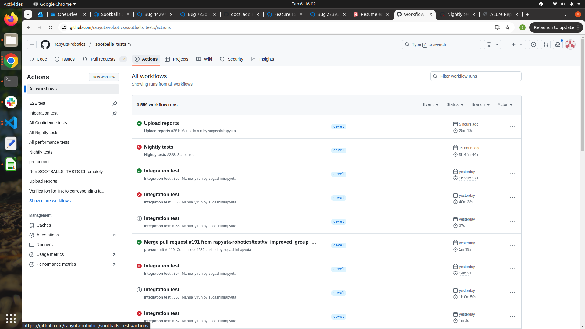
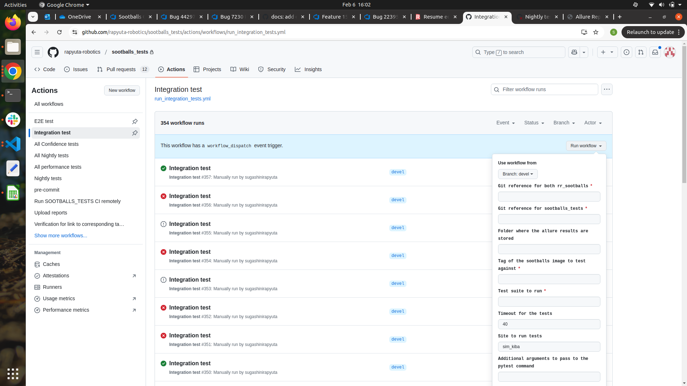
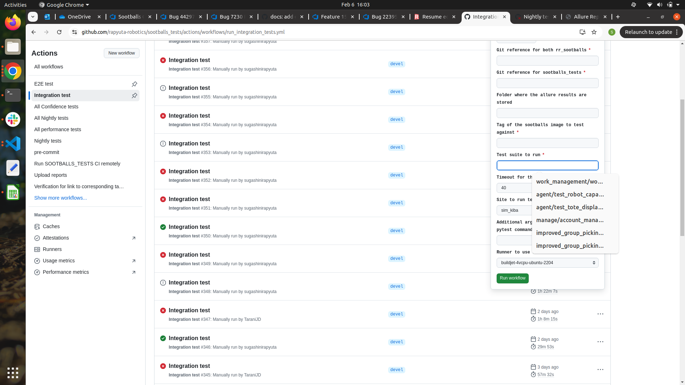
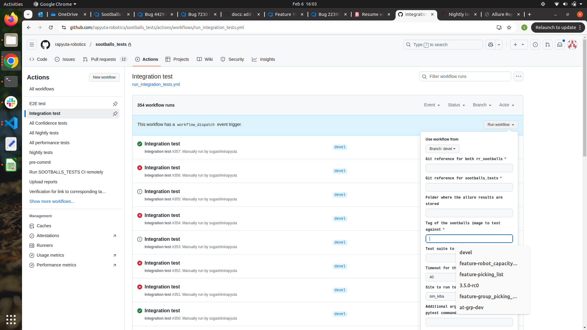
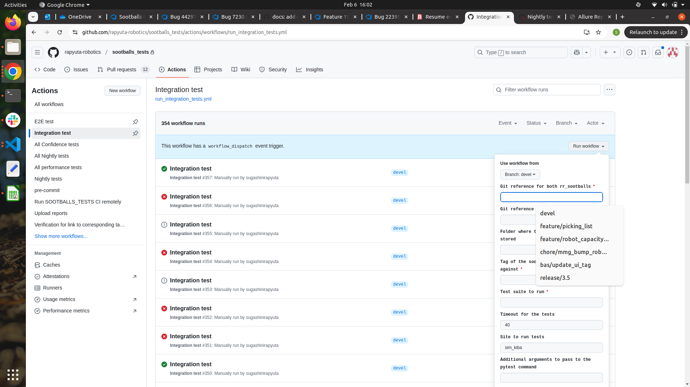
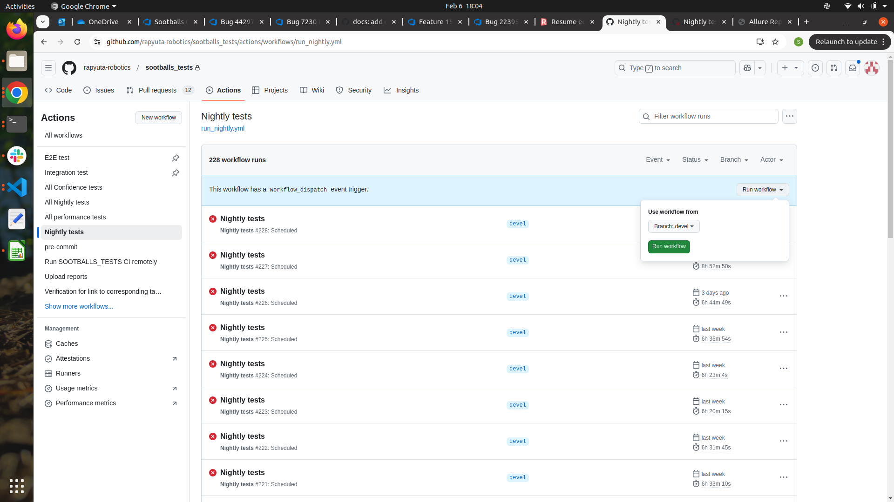
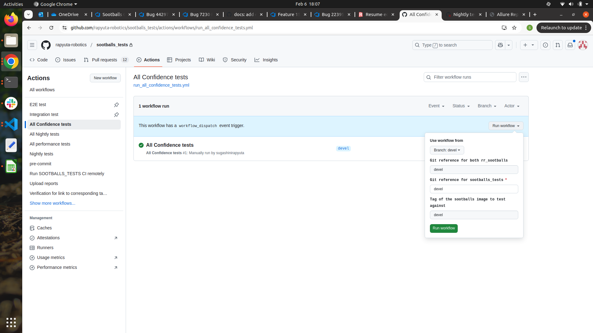
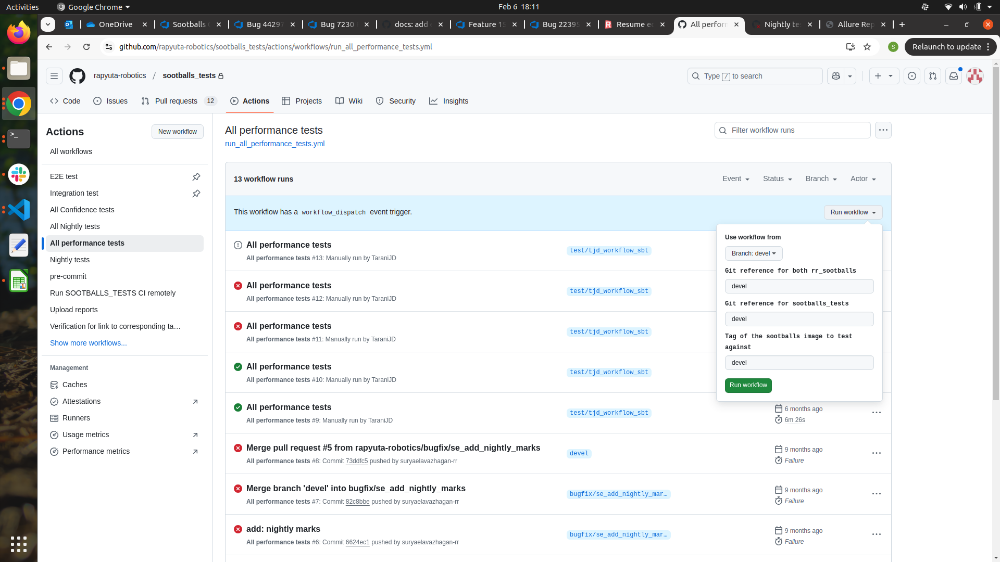

CI RUNS
CI Run for Specific Suite:
1. Initiate integration/E2E test:
Initiate test run for specific suite to ensure that the test suite is passing in devel or release branch or in feature branch
Navigate to Actions tab in sootballs_test repo
{kind=link}
Navigate to integration/E2E test tab in Action module
{kind=link}
Steps to Run CI Workflow
Click run_workflow icon and fill the details like below,
Use workflow from –> this is always devel only. We don’t have to change this
Git reference for both rr_sootballs –> branch of rr_sootballs
If we need to run in devel, enter “devel”
If we need to run in release branch, enter release name
If we need to run in specific feature branch, enter the feature branch name
Git reference for sootballs_tests –> branch of sootballs_test repo (our code branch)
Tag of the sootballs image to test against –> tag of the rr_sootballs branch.
For example, for devel branch, “devel” is tag.
For release branch “3.5.0-rc1”, “3.5.0-rc0”, etc like, for our particular test branch “branch name” should be used.
Test suite to run –> path to the test suite should be entered in this
Timeout for the tests (minutes) –> default timeout will be 40. If that suite takes long time, we can change.


{kind=link}

{kind=link}
{kind=link}

{kind=link}
2. CI Run for Nightly Tests
Navigate to the Nightly tests tab and click workflow. Run the workflow in whichever branch we need.
{kind=link}
3. CI Run for Confidence tests:
Navigate to Confidence tests tab and click workflow. In rr_sootballs reference we can give in which branch of rr_sootballs we are going to run the suite. In sootballs test, we can give in which branch of sootballs_tests we are going to run the suite.
{kind=link}
4. CI Run for Performance tests:
Navigate to Performance tests tab and click workflow. In rr_sootballs reference we can give in which branch of rr_sootballs we are going to run the suite. In sootballs test, we can give in which branch of sootballs_tests we are going to run the suite.
{kind=link}
{kind=link}